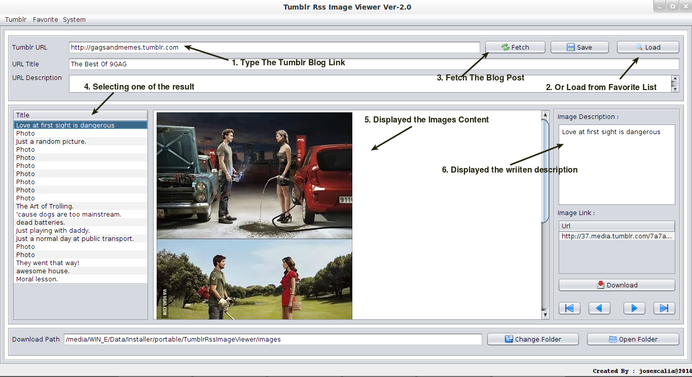

1. Tumblr Rss Image Viewer
This is the primary form of this application, with this form you will access the Tumblr blog feed. Once you fetch one of your favorite Tumblr blog, the result will be displayed per blog post, you can choose each blog post displayed on the result table, when it selected, the blog post which containing image will automatically download the contents and stored in cache folder. So next time you viewing the same blog post, it will no longer download the contents from the internet. 
This form can also save your favorite Tumblr blog link directly by clicking the Save button. Once you clicked the button, it will automatically save the link to the database, so in any other time you can load the saved link by pressing the Load button. This form also have an ability to download the images of the content into your selected folder by clicking the Download button, the downloaded content will be save in a folder where Download Path declared. But you can also change this Download Path where ever you like by using Change Folder button, and also open the folder of Download Path directly by clicking the Open Folder button.